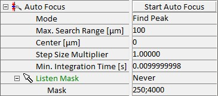
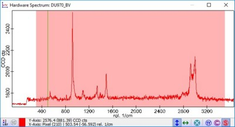

|
光谱自动对焦
|
光谱自动对焦组件自动寻找具有最佳拉曼信号的 Z 轴位置。这对于自动化测量特别有用，例如在处理脚本或ParticleScout中。

模式
最大搜索范围（Z 轴范围）
自动对焦的最大搜索范围。
中心
自动对焦在中心位置上下各使用最大搜索范围的一半进行。
步长乘数
最小积分时间
为寻找最佳对焦位置而采集的每个光谱的最小积分时间。（如果 Z 台较慢，可以更长。）
监听 掩模
掩模决定使用哪个光谱区域来搜索最大信号。
它使用由分号分隔的值对定义："250;300;500;550"（掩模设置为 250 到 300 以及 500 到 550。）

定义的掩模在所用 CCD 相机的硬件光谱窗口中可见。如果监听掩模模式已激活，您也可以在此窗口中编辑掩模。
对焦后移动 [µm]
在自动对焦后移动定义的微米数。